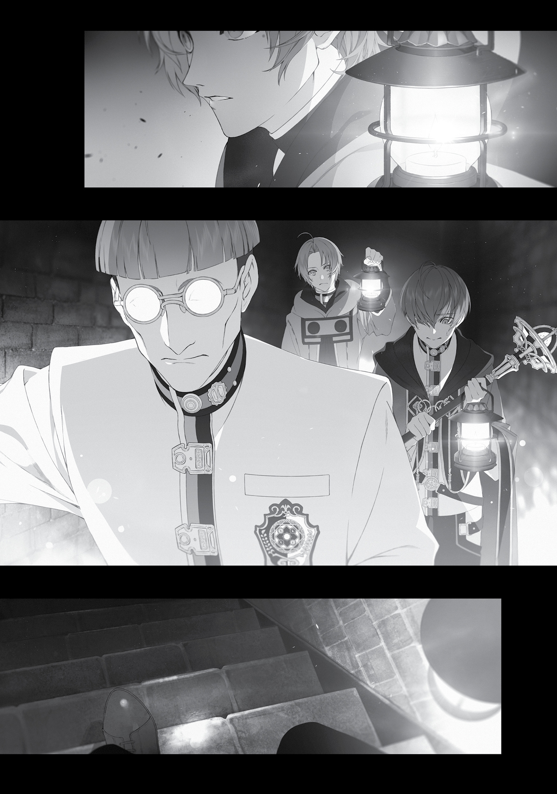

Chapter 3:
Things to Prepare Before Marriage
(Part 2)
WE TOOK TURNS standing watch. One person would stay awake to alert the other two if anything weird happened. I specifically instructed my companions that if they heard a creaking sound, they should not investigate, but wake the others at once instead.
We were sleeping where the previous resident had been murdered: the bedroom at the edge of the second floor. The location might have something to do with whether the evil spirit appeared or not. I didn’t really think it was bandits or the like, though it sure would be nice if that was all it was. I could arrest them, turn them in, and add the resulting cash reward to our marriage funds. If it was just a regular monster, even better. All we had to do was search and destroy. Easy as pie.
***
“Rudeus! Wake up; it’s that sound!”
It happened when Cliff was on lookout.
I immediately woke and jumped up, checking the time. To ensure that we slept lightly, each person only got two hours of sleep at a time, using an hourglass to keep track. Right now, it was on its second flip, which meant it was about two or three in the morning. The perfect time for an evil spirit to appear.
“Wake Zanoba up.” After giving Cliff that short command, I headed over to the door and strained my ears.
Kree… kree…
Klak… klak…
Kee… kee…
Oh crap. I really could hear it—quite clearly, too. It sounded like a creaking chair. It was actually kind of terrifying now that I heard it for myself. My lips pinched as I activated my Eye of Foresight.
“Aahh.” Zanoba rubbed his eyes as he let out a big yawn.
Once I confirmed he was awake, I put my hand on the doorknob. Then, slowly, making sure it didn’t make a noise, I opened the door. I looked down the hallway. Nothing. Just to be sure, I looked the opposite way too. Nothing. Then up and down. Nothing.
I strained my ears, but I couldn’t hear anything. The sound had stopped.
Zanoba got up and came over behind me. “How does it look out there?”
“I don’t see anything in the area.”
We could either search the manor or wait for something weird to happen. The previous owner had ignored the noise, thinking he’d misheard it, and then died, so we probably shouldn’t copy him.
“Let’s search for the source,” I decided.
“All right then. We’re using the same formation as before, I take it?” Zanoba asked.
“Yeah. Be careful.”
“As long as you’re guarding my back, Master, I have nothing to fear.”
He took hold of his club. Cliff followed him, looking nervous.
“Master Cliff, do you remember what you’re supposed to do?”
“D-divine magic.”
“That’s right. I’m counting on you.” Zanoba would be our shield, Cliff would use divine magic, and if that didn’t work, I would use my Stone Cannon. We were all set. “Zanoba, let’s move out.”
Our nighttime investigation began.
I was already familiar with the house’s layout from our daytime search, and the investigation moved smoothly. First, we searched the entirety of the second floor. No abnormalities to be found. After that we cautiously descended to the first floor. We moved through each room, checking each place where something might be hiding, such as the fireplace and the kiln. Once again, nothing. All of the rooms were empty.
“Master, all that’s left is the basement.”
“Yeah.”
We headed down the steps toward the basement. It was dark. There’d been nothing here when we searched during the day, but now, I sensed something ominous below.
I was getting nervous. My heart drummed loudly. I took a deep breath, keeping my guard up in case anything attacked us from behind as we made our way down the stairs. It felt like we were descending into hell. Finally, we arrived at the basement.
“How is it?” I asked.
“There’s nothing here,” Zanoba answered.

I used my lamp to illuminate the area. There was nothing, not even at the edges of the room. Besides, the previous owner had surely checked the basement out. It was the most suspicious place in the manor, after all.
“Let’s return to the bedroom and prepare ourselves.”
We cautiously crept out of the basement and back to the second floor. We walked down the hallway to the room we’d been stationed in.
“Zanoba, there’s a chance it might be lurking in the room we were sleeping in, so be careful when you open the door.”
“Understood.” He tightened his grip on his club and gently set his other hand on the doorknob before opening it.
“…”
Nothing happened.
“Looks like it’s all clear.”
There was nothing. No attack.
“Phew.”
We could rest for now. Perhaps it was time to consider that the creature only attacked while people were asleep. Or while they were in the loo. Come to think of it, we hadn’t checked the garden. I should take a closer look at that tomorrow.
That’s when I suddenly looked behind us.
There it was.
It was at the end of the hallway, low to the ground, almost as if it were crawling. Only its upper half showed over the top of the stairs. It had its head cocked as it looked our way. At first, I thought it could be human. It had eyes, a nose, a mouth, but no hair or ears.
I also, somehow, didn’t get the sense that it was alive.
“…”
It painted a haunting, pale silhouette in the darkness as it watched us. For a few seconds we just stared at one another.
“Oh,” I started, trying to say something.
That was when it moved. Its body rose and it leaped onto the second floor. It was human-sized…but it wasn’t a human. It had four arms and four legs. In the pitch black of night it came, brandishing what looked like a stake, loping silently on all four legs as it streaked at an unbelievable speed straight toward—
“Whoaaah!”
My legs gave out, and I landed on my ass while hastily launching a Stone Cannon. Fear that I might destroy my own house rose within me. I hesitated, but ultimately weakened the strength of my attack. The ball of earth shattered against our enemy’s shoulder, but all it did was make the inhuman thing stagger. It came at me with its stake, and I used my demon eye to try and avoid it, but—
“Master!” Zanoba flew in front of me. The creature swung down hard with its weapon. It went straight for his heart.
“Zanoba!”
It didn’t pierce through. Zanoba’s blessed skin was too tough for the creature’s attack. Y-yeah! That’s my pupil; not even a scratch, I thought.
Zanoba grabbed the thing’s face with both hands. All eight of its limbs scrabbled in the air as it rained punches on Zanoba.
Cliff peeked slightly out of the room to chant an incantation. “I call upon thee, God who blesses the land which nurtures us! Deliver divine punishment to those foolish enough to defy the natural ways! Exorcise!” White light from his staff struck the four-legged figure…but didn’t stop it from moving. So it wasn’t a spirit?
In that case, it was time for me to use my magic. “Zanoba, get out of the way. I’m going to use Stone Cannon!”
“Please wait, Master!” Zanoba wouldn’t move. Even though the stake was tearing his clothes to shreds, he wouldn’t step aside. Why?
“Enough, move! I’ll handle it!”
“Please wait! Master, I beg of you!” Zanoba threw his arms around the thing, almost as if he were trying to protect it from me. It continued scrabbling, reducing his clothes to rags. His back, now exposed, looked so frail you wouldn’t believe he possessed superhuman power.
A few seconds passed like that. Then, minutes. The enemy continued its violent struggle, but its movements were gradually becoming duller until it stopped.
“Phew.” Once Zanoba was certain it had stopped, he pulled off his torn garments and used them to bind the inhuman thing’s hands and feet. “Master, let’s return to the room.”
“All right…”
Cliff stood in the middle of the room, trembling with terror. “D-don’t get the wrong idea! It’s not like I ran away. I just figured I’d be in the way in that cramped hallway.”
“Ah, I see. Good thinking.”
“R-right?”
His excuse wasn’t even remotely convincing, but then again, I’d gotten scared too. I wasn’t going to say anything.
“Master…”
“You saved me back there, Zanoba. But that was dangerous, you know. Unlike a certain Demon King, you’re not immortal.”
“This is amazing, Master. Here, please have a look.” Zanoba was extremely excited. He completely ignored me as he set down our bound attacker, which was making unexpectedly light clattering noises. Zanoba grabbed a lamp to shine upon it.
“I-It’s…a doll?”
Before us was a white-painted wooden mannequin, crumpled over. It had four arms and legs. Despite its strange shape, it was definitely a construct. I’d wondered why I hadn’t heard its footsteps, and now I knew. Pitch-black cloth was wrapped around each of its feet. What I thought had been a stake was just a broken arm—two of its four arms were broken. It had a pitiful excuse for a nose and mouth on its face, with glass balls for eyes. Those cold and unfeeling eyes were what I’d been looking at before.
To be honest, it was entirely too creepy to bear…and it might start moving again any minute. Cliff was of the same mind. He had his staff at the ready, cautiously fixing his gaze on the doll.
“Master, this is an incredible discovery!” Zanoba, on the other hand, couldn’t seem to hide his excitement.
“Zanoba, I don’t care how much you love dolls—” I started to say.
“This one moved! A moving doll!”
When he said that, I realized he was right. This doll had attacked us. “A moving doll.”
A moving doll! A doll that moved all on its own. So…an automaton. Like a robot. Like…a maid robot. Oooh! As those words flashed through my mind, the fear I’d felt instantly dissipated.
“You’re right,” I said. “This is incredible.”
“You finally understand?”
“Yeah. I’m glad we didn’t destroy it. Zanoba, your judgment was flawless.”
“Heh heh. I knew what it was at first glance.”
“I’d expect no less. Your eye for dolls has already surpassed mine,” I said, offering my proudly grinning pupil some praise.
That aside… A moving doll. Come to think of it, there were other inanimate objects in this world that moved, like armor. This doll was carved from wood, but maybe I could make stone figures move as well? And if I could find a way to make the figures move by themselves…and if I could develop a substance like silicon to give them skin, like humans…
The possibilities were endless.
“Zanoba, what should I do? My heart is pounding so hard!”
“Mine too. I can feel the tears coming!”
For now, we’d take the doll back home. Then we could research the mechanism that allowed it to move.
“Hey, you two, enough is enough!” Cliff suddenly lost his patience with us. I looked over to find him glaring at us, his staff tightly gripped in both hands. “This isn’t the time to be talking about that kind of stuff!”
“Not the time to be talking about what ‘stuff’?!” Zanoba grabbed Cliff’s face in one hand and lifted him up into the air. Ah, it’d been a while since I’d seen him pull this trick.
“Aggghhhhh!” Cliff grabbed at Zanoba’s arm, but the latter didn’t even flinch.
“The doll moved! Do you not understand how remarkable that is?!”
“Ow, ow, ow! There are monsters out there like that, like armor that moves on its own!”
Monsters. Hearing that made me recall our initial objective. The reason we’d come here wasn’t to catch a doll that could move; it was to secure this house. Not that I couldn’t kill two birds with one stone.
“Zanoba, please release him.”
“Grr…but, Master—”
“Master Cliff has a point.”
As soon as Zanoba let him go, Cliff immediately chanted healing magic to recover. What a baby.
“This doll is likely the ‘evil spirit’ we were looking for.”
“Hrm.”
“And there’s no guarantee it’s the only one. Let’s find and capture any others on the premises. Maybe we can find some information about how they were made, while we’re at it.”
“I understand!” Zanoba nodded, finally convinced.
“We won’t be sleeping tonight. We need to do an exhaustive search of the house and figure out where this doll was hiding.”
That was how our third sweep of the building began.
We were looking for a place big enough to hide a human-sized doll, but had found nothing of the sort in our second round of searching the house. I thought it might be in the garden, since we hadn’t checked there, but that lead didn’t pan out. The doll’s footprints were clearly imprinted on the snow, but led nowhere.
I was beginning to suspect there was a hidden room in the house. It had clearly been designed to be completely symmetrical, so perhaps we needed to look for anything that wasn’t symmetrical. With that in mind, I searched the house’s first and second floors for anomalies in the layout, but didn’t find anything. The lack of light made it hard to tell.
“It might be better to look again tomorrow, when we have daylight,” Cliff suggested.
We agreed. Before we quit for the night, however, we decided to move the doll to the university. We bound its arms and legs tightly and put it in Zanoba’s room. In better lighting, we could tell that it was quite old. It had looked pale white before, but I could see now that the original white paint was beginning to peel, and there were patches of mold.
“Master, is this a…new doll?” Julie asked. I’d thought she might be afraid of it, but instead, she just seemed curious. “Shall I…clean it?”
When Zanoba brought home random dolls from the market, she was in charge of cleaning them up. Zanoba thought the best way to increase her appreciation for figurines was to have her practice cleaning and polishing them, and it seemed his education was working.
“How do we get it to move again?” Zanoba wondered.
“We’ll look into that after we deal with the manor.” I understood his impatience, but he needed to calm down. For now, we sealed the thing up in a box made with my earth magic. I didn’t want it attacking Julie while we were away.
We returned to the manor, stopping to buy a bunch of lamps along the way. I decided to search the fireplace again, crawling into it to give it a thorough examination this time.
“Hm, this isn’t it, huh?”
I batted away soot and spiderwebs as I finished my search. Then it struck me…there wasn’t any soot on the floor. It was almost as if it had been cleaned, completely wiped away. Now that I thought about it, the cloth wrapped around the doll’s feet had been black. Was it cleaning the place up every night?
Now for the second floor, first floor and basement, of which the basement was definitely the most suspicious. We ventured down once more with our lamps. I left the door cracked open to ensure we wouldn’t run out of oxygen and lined up lamps so the space was thoroughly illuminated. If I were a children’s storyteller I might have exclaimed, See, look, it’s as bright as day in here!
There was a darkened square shape on the wall: a hidden door that we hadn’t noticed in the dark. When the house was first built, it had probably blended in, but as time passed, the wear from repeated openings and closings had darkened the area around the hinges. There were also marks on the ground where the door swung open.
“Well, let’s go in!” Cliff happily reached to open the door. I readied myself for a possible attack and trained my eye on the door, but then Cliff paused.
“What’s wrong?” I asked.
“I don’t know how to open it.”
I took a look for myself. He was right. There was neither a doorknob nor notch in the door to help you pull it open. It didn’t seem like you were supposed to lift it open, either.
“Master, shall I break it?” Zanoba proposed.
I shook my head. Even if I was going to renovate the majority of the house, I still didn’t want to damage anything if I could help it. I looked at the scuff marks on the ground. I had no doubt that the door could be opened, and that it opened toward us.
“Hm?”
I noticed something strange about those marks. They began three boards over to the left, not aligned with the wear on the wall.
In my previous life, we’d gone on a school trip to a former ninja village that had a hidden door. With that memory in mind, I tried pressing on the door’s left edge. There was a creak, but the door didn’t open. It was heavy.
“Zanoba, push this part right here.”
“Hrm.”
Once he did, the door creaked open. So that was the sound we’d heard last night, huh? There was a handle on the inside of the door, so opening it from within was apparently easy.
“I doubt there are any traps, but please keep your guard up,” I said as we entered, lighting the room with my lamp. It was a cramped room with a single desk, a wooden pedestal, and nothing else. There were several books and a bottle of ink on the desk. The bottle was cracked and its contents had all dried up.
As for the pedestal, how should I describe it? It was shaped like a casket, its base hollowed with indentations that fit the doll’s size and shape. Looking closely, I noticed a transparent crystal embedded in the wood right where the doll’s head would rest. It probably charged itself by lying here—in a magical sense, anyway, not an electrical one.
“Cliff, can you tell me anything about this pedestal?”
He shook his head. “Nope; it’s my first time seeing something like this.”
I nervously reached out to touch it. I didn’t think it would zap me or anything, but I had to make sure it was inert. When it didn’t react, I turned my attention to one of the books on the desk. I could tell it’d been left here for quite a while, but fortunately there was no sign that bugs had gotten to it. Maybe the doll had exterminated them?
On the front cover was was a title and a crest in a language I couldn’t read. The book’s interior was the same, written in a script I didn’t know, which meant it had to be Sky God tongue, Sea God tongue, or a language so obscure I’d never heard of it. Both the crest and the script felt familiar, though. Where had I seen them? The university library, perhaps?
As I thumbed through the pages, I came upon a number of sketches. Sketches of the human body, sketches of magic circles. As I flipped further, I came upon one of the four-legged, four-armed doll. “Zanoba?”
“Yes?” Zanoba, who had been stationed at the entrance, came over.
“I think this is the doll we found. What do you think?”
“I can’t read the text, but you’re probably right,” he agreed.
“Where? Let me see,” said Cliff, butting in once again.
The three of us gazed at the book, flipping through the pages. The binding was quite old and seemed like it might give at any moment. There were arrows drawn beside the sketches and words written beneath them, probably annotations or commentary. There were sketches of the doll’s arms, magic circles, and more arrows and annotations. The margins were packed with detailed scribbles.
“Judging by the sketches alone, this seems similar to the magic circles used to enchant magical implements,” Cliff muttered.
“Really?”
“Yeah, I can tell because I’ve been researching them lately. The doll must be a magical implement.”
“So that’s it.”
The previous owner—no, the first owner of this house—had probably been researching something forbidden. My guess was that he’d had the doll protect the house, which seemed to have been successful, since it had clearly been moving about the manor and attacking intruders. Then the original owner disappeared. Whether he’d left his work incomplete and moved somewhere else, or got caught, I had no idea. Considering he’d left the fruits of his labor behind, there was a high possibility he’d passed away in some unforeseen accident.
As for the doll, it had probably stayed asleep here on this pedestal until something happened that caused it to awaken. It started cleaning the house and patrolling it, killing any intruders it discovered. It was probably programmed to return back to the pedestal to recharge once it was done.
This seemed like the most logical conclusion, at least. Though if it was patrolling the garden, then someone should’ve spotted it by now… Wait, no, we’d broken the front door when we first got here, and it had been the only broken door in the building. The doll’s original programming might have had it patrolling the garden, but it was forced to abandon that route when it couldn’t open the doors, leaving it trapped inside the house. And then we’d broken the door when we entered, allowing it to resume doing rounds of the garden—probably right around when we passed by and headed up the stairs, leading it to follow us.
***
Just to be on the safe side, I searched every nook and cranny of the house again and kept an eye on it for several more days. There were no more sounds at night. Once I was certain it was safe, I went to the real estate agency to officially sign the contract. As for the evil spirit, I told them it was a fiendish monster that had roosted in a hidden room in the basement of the house.
Tomorrow, I’d have some people go in to start cleaning and making repairs. I decided to buy only the bare essentials of furniture for now. Perhaps it was just the Japanese part of me talking, but I felt like I should save the rest for myself and Sylphie to decide on together. Besides, we wouldn’t actually be able to move in for another month, when the renovations would be done.
I could just imagine the excitement on Sylphie’s face. “See, this is our new house!” I’d say.
“Whoa! Rudy, it’s amazing!”
“There’s a lot of rooms inside, too. So we’ll have enough space regardless of how many kids we have!”
“Incredible; you’re even thinking about our future together! Take me now!”
“Of course, my love. I already prepared the bed for us.”
“Rudy, take me!”
Yeah, that wasn’t likely to happen, but the thought still made me grin.
Wait. She wouldn’t be disappointed, would she? Like, “Ugh, Rudy, this was all you could get for us?”
No, Sylphie wasn’t that selfish. At least I was pretty sure she wasn’t.
Anyway, this had been a fruitful endeavor. In just a few days, I’d gotten my hands on a nice new place and inherited one of the treasures that had been left inside it. I was fairly sure that doll was a magical implement. It was possible the proper protocol in these circumstances was to submit my discovery to the Magicians’ Guild, but I wasn’t officially a member yet.
Once the process was more or less over, I decided to move the research materials that had been left in the basement room. Zanoba carried the pedestal while I carried the books and such. We’d be using them to investigate that doll.
“Master?”
We were on the path leading back to the university when Zanoba called out to me, a serious look on his face. He had the large wooden pedestal balanced on his shoulder. It was incredibly heavy, but Zanoba had no issues lifting it. Just to be on the safe side, we’d wrapped it in cloth so it would look like a coffin to anyone watching.
“What is it?”
“Might I convince you to leave the research on the moving doll entirely to me?”
I met his gaze. Behind those round frames was a look of determination I’d never seen before.
“My mana pool is deplorably small, and my hands are far too clumsy. I’m even holding you back on the red wyrm figurine we’re supposed to be making for Julie. I’ve barely made any progress on it.”
It would be easy to assure him that wasn’t true, but I knew this was a concern for him. I couldn’t speak thoughtlessly. Zanoba continued. “However, I feel like I can carry out research. Honestly, looking at the book gives me a sense of what the author wanted to accomplish.”
Hm. So he could intuit the thoughts of the doll’s creator since they shared a similar passion, huh?
“That said, identifying and translating the language may take some time. Perhaps it would be faster for you to lead the search,” he suggested.
I wasn’t sure about that. I couldn’t spend all my time researching dolls, after all. It might be more beneficial to leave it to Zanoba. But… “Hypothetically, what would you do if that doll were to go berserk again?”
“Even if it were to go on a rampage, I could recapture it without injury. You saw that for yourself, didn’t you?”
True enough. The thought of it moving at night was a bit terrifying, but that probably wouldn’t happen as long as it wasn’t allowed to recharge on its pedestal. Leaving it in Zanoba’s room was dangerous, though, so it might be a good idea to borrow one of the university’s research chambers. One with a sturdy door.
No, wait. It was possible this really was forbidden magic at work. Maybe we’d be better off not doing this on campus, even though Nanahoshi was doing something similar with her research into magic circles. Maybe I’d have her put in a good word for me, just in case. She was an A-ranked member of the guild, after all.
“Please, Master! When your plan is fully realized, I don’t want my only contribution to be money!”
It seemed Zanoba had put a lot of thought into this. I was a little concerned about his single-minded fixation on figurines, but if this was how he felt, maybe I should leave it to him.
“I beg of you! Entrust this research to me!”
Apparently, he misunderstood my silence as reluctance. He’d set the pedestal aside and was now on his hands and knees, both hands spread before him as he prostrated himself in the snow.
“Okay, I get it. Just stand up! I’ll leave it to you.”
“Truly?!” He immediately leaped to his feet, an expression of absolute joy on his face. He sure changed on a dime.
“There’s a possibility you may be treading into forbidden magic territory,” I warned.
“Forbidden magic?”
“Yes. We’ll borrow a research chamber from the university for now, so do your work there.”
“…Thank you!” He quickly lifted the pedestal again, narrowly missing the tip of my nose. That was close! What had he planned on doing if he accidentally hit me in the head with that?
“Would the two of you quit drawing attention to yourselves in the middle of the street?” Cliff grumbled.
And so, Zanoba began his search into automated dolls and I got my hands on a new house. Next up: renovations!